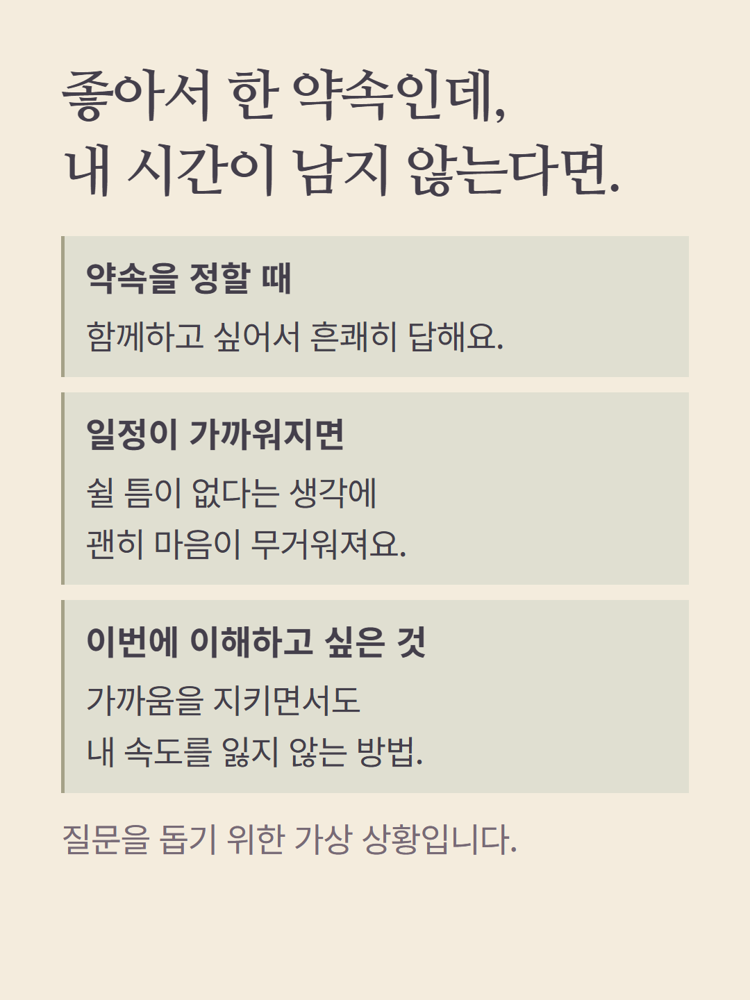
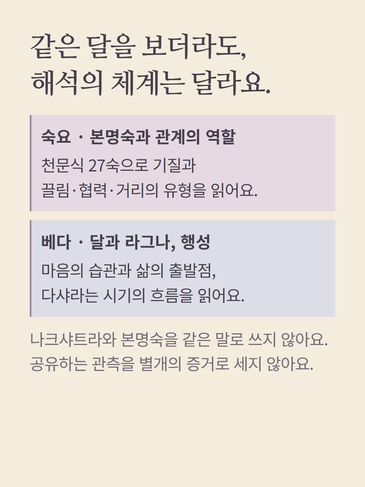
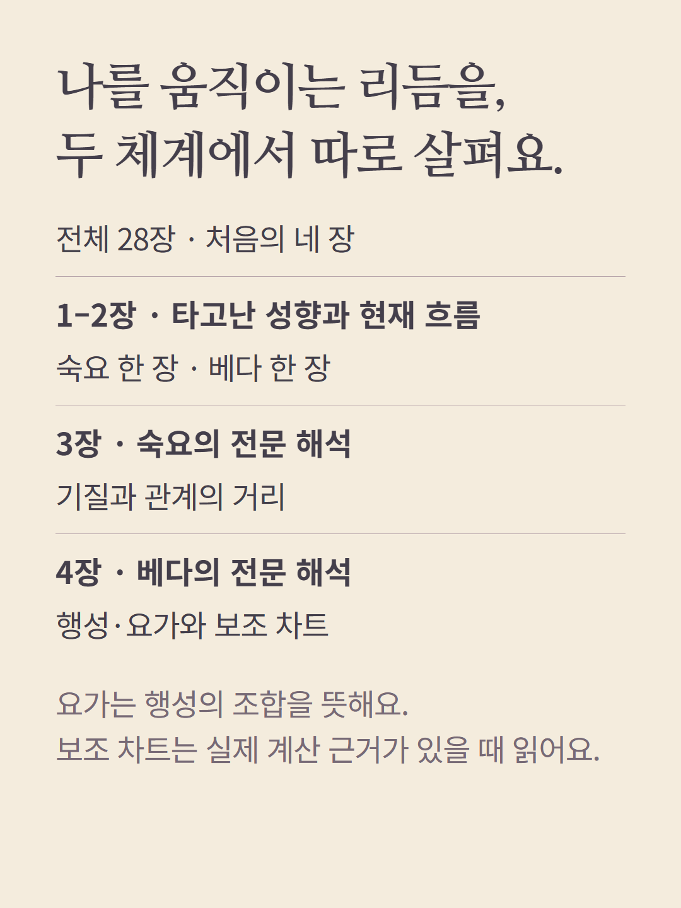
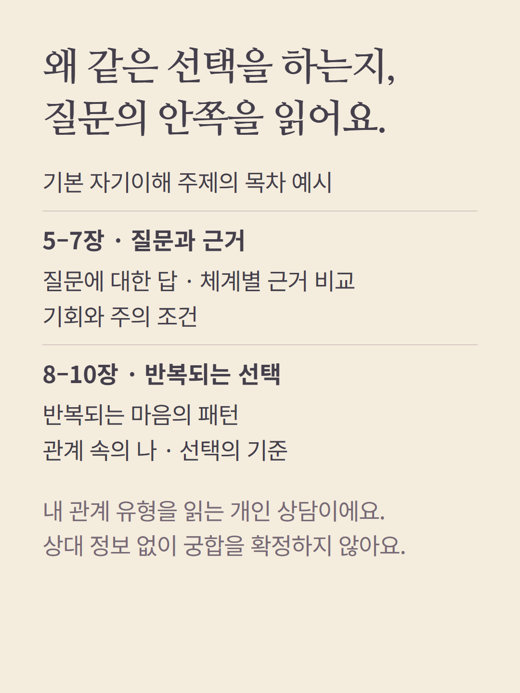
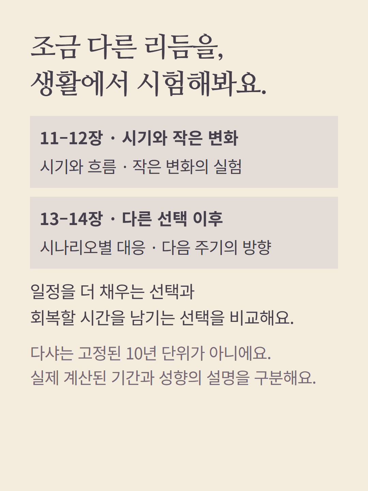
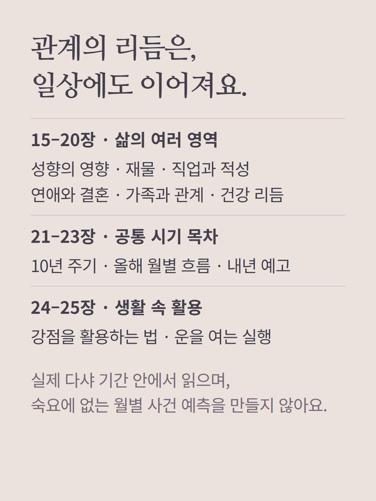
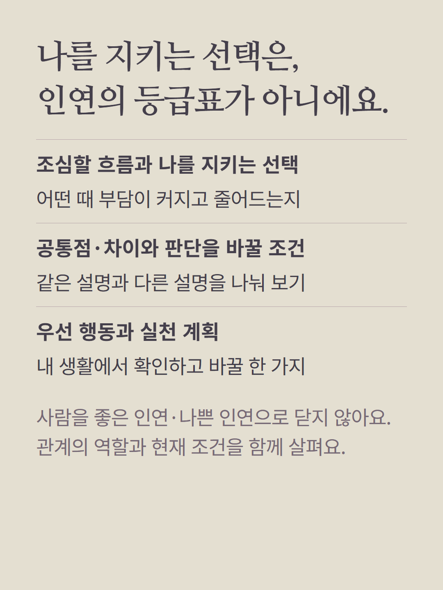
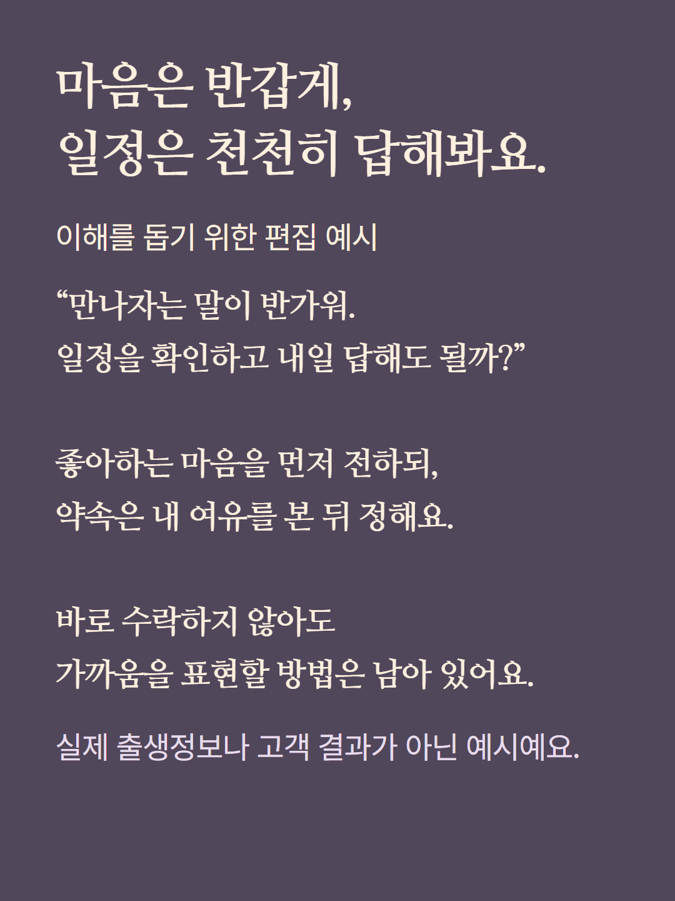

숙요와 베다 두 체계를 구분해 읽는 28장 개인 모둠 상담입니다. 숙요는 천문식 27숙의 기질과 관계 유형을, 베다는 라그나·달·나크샤트라·행성과 실제 다샤 근거를 사용합니다. 두 체계가 달의 관측을 공유한다고 독립된 두 증거가 되는 것은 아닙니다. 이 안내는 기본 자기이해 주제의 목차이며 주제에 따라 중간 목차가 달라집니다. 개인 관계 지도는 특정 상대와 계산한 궁합이 아닙니다. 공통 목차 ‘10년 주기·월별 흐름’은 실제 다샤 기간으로 제한하며 숙요에 없는 월별 예측을 만들지 않습니다. 본인 출생시간·지역·시간대가 필요하며 예시는 가상 편집, 본문은 AI 작성입니다. 가격·추가 질문 조건은 기존 화면을 따릅니다.